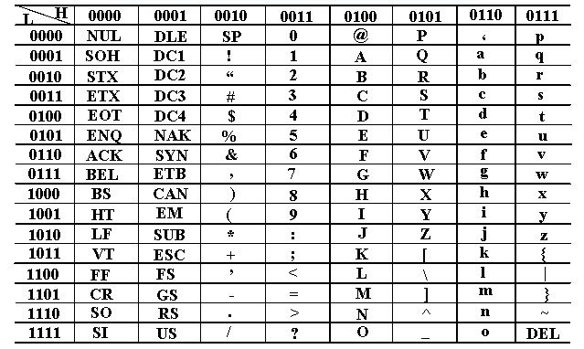
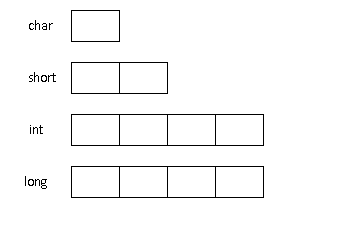
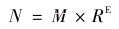
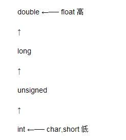
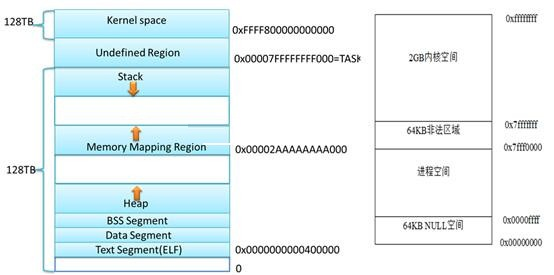
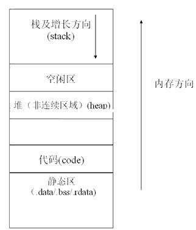
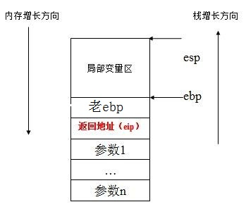

大家知道，计算机程序的主要任务就是用来处理各种不同的数据。而要处理的数据要么被放在内存（或者寄存器）中，要么被存放在外存（如磁盘）中。被处理的数据又分为不同的类型，比如字符，整数，实数等类型。本章将集中介绍C语言程序中不同的数据类型。
C语言中把程序计算的数据分为了字符、整数、实数类型。所有的数据都可以通过这几种数据类型来予以表示。比如一个人的名字可以用字符类型表示，一个人的年龄可以用整数类型来表示，而一个人的身高或者体重则可以用实数类型来表示：
char gender = ‘M’; char name[16]=”tom”; int age = 30; float weight = 79.1; double height = 1.80; bool bOk = true;
上面的4行代码里，出现了4种新的概念：数据类型，变量，常量以及程序语句。其中，char、int、float、double、bool(新的C标准包含了布尔类型)是数据类型，而且必须小写；name、age、weight、height是分别对应的数据类型的变量，变量存放在计算机的内存中，用来存放对应的数据。而”tom”，30，79.1，1.80则分别是对应数据类型的常量。而以分号结束的一行代码被称为程序的一条执行语句。
程序在数据计算过程中，就是通过不断的使用变量和常量来进行计算的。所以，在程序代码里，会大量出现对变量和常量的使用。
一般将上面的这些数据类型叫做内建型别，而之后涉及到的结构体，联合体类型等叫做构建型别。
在C语言里，字符类型有两种：char和wchar_t。它们对应了字符的两种编码类型。看下面的一句代码：
char c = ‘a’;
上面的语句在程序里的意思，定义了一个字符型变量c，并把字符值’a’赋值给了变量c，此时变量c的值是’a’。
字符包含英文字母、希腊字符、中文字、日文等各种符号。字符在计算机中是通过字符编码的形式存储的。目前最流行的字符编码包括：ASCII码和UNICODE码。
ASCII码是单字节编码系统，它使用指定的 7 位或 8 位二进制数组合来表示 128 或 256 种可能的字符。标准 ASCII 码也叫基础ASCII码，使用 7 位二进制数来表示所有的大写和小写字母，数字 0 到 9、标点符号， 以及在美式英语中使用的特殊控制字符。其中：
编码0-31及127 共33个字符是控制字符和通信专用字符。其中控制字符：LF（换行）、CR（回车）、 FF（换页）、DEL（删除）、BS（退格)、BEL（振铃）等；通信专用字符：SOH（文头）、EOT（文尾）、ACK（确认）等；ASCII值为 8、9、10 和 13 分别转换为退格、制表、换行和回车字符。它们并没有特定的图形显示，但会依不同的应用程序，而对文本显示有不同的影响。
编码32-126共95个字符包括了编码32为空格，编码48-57为“0”到“9”十个阿拉伯数字；编码65-90为26个大写英文字母，编码97-122号为26个小写英文字母，其余为一些标点符号、运算符号等。
同时还要注意，在标准ASCII中，其最高位(b7)用作奇偶校验位。目前许多基于x86的系统都支持使用扩展ASCII。扩展 ASCII 码允许将每个字符的第 8 位用于确定附加的 128 个特殊符号字符、外来语字母和图形符号。
常见ASCII码的大小规则：0 < … < 9 ＜ A < … < Z ＜ a < … < z。记住几个常见字母的ASCII码大小：“A”为65；“a”为97；“0”为 48。
ASCII编码只能表示有限的字符数。为了能够将世界上所有的字符都纳入编码范围，UNICODE字符编码便产生了。在UNICODE字符编码中，经常采用的是用2个字节或4个字节来表示一个字符。UNICODE编码的具体实现包括UTF-8、UTF-16和UTF-32。其中UTF-8中的字符占用的字节可以从1到4个，而UTF-16占2个字节，UTF-32占4个字节。
在C语言里，ASCII字符类型数据用char来表示。一个char类型的数据，占用1个字节大小的存储空间，即sizeof(char)=1。而UNICODE字符类型（宽字符类型）用wchar_t来表示（注意，C语言是大小写敏感的，无论是数据类型或者变量，大写和小写是不同的）。而wchar_t的存储空间的长度则和系统有关。如Windows下通常2 bytes，因为宽字符编码定为UTF-16。Unix下gcc可以选2/4bytes，通常是4bytes，宽字符编码为UTF-32。
sizeof(wchar_t) = 2 //Windows平台 sizeof(wchar_t) = 4 //Linux平台
上面的sizeof是用来计算C语言数据类型或者变量在内存中存储长度的一个操作符。这个操作符在以后的程序代码里会经常用到。
在程序里，可以定义一个字符变量来存放一个字符数据，比如：
char c=’a’; wchar_t wc=L’a’;
#include <wchar.h>
#include <locale.h>
#include <stdlib.h>
#include <stdio.h>
#include <string.h>
int main(void)
{
setlocale(LC_ALL,"zh_CN.UTF-8");
wchar_t a1[10] = L"你好";
wchar_t c = L'A';
wchar_t a2[] = L"Hello!";
printf("%d\n", sizeof(c));
printf("%d\n", sizeof(a1));
wprintf(L"this is a test !\n");
wprintf(L"%d\n ",wcslen(a2));
wprintf(L"%ls\n ",a2);
return 0;
}
其中，字符常量a 需要用单引号括起来，而UNICODE字符，在Windows上需要在前面在一个L，来表示宽字符。而c和wc是一个用来存放常量字符的变量。即变量c和wc的值此刻的值是’a’和L’a’。
此外需要注意的是，字符类型char也分为有符号类型和无符号类型：unsigned char和signed char。如果char类型之前没有加上unsigned或者signed，那么这个char类型是有符号类型还是无符号类型呢？这个没有定论，取决于编译器的实现。所以下面的代码不具有可移植性：
char c;
...
if (c<0)
{
Do something;//伪代码
}
在有的平台上，char可能是无符号类型，那么c不可能小于0。所以，为了代码的可移植性，可以在char之前明确的加上 signed 或者unsigned。
int x = 100;
短整型的整数： short int，可以简写为short。
整型：int
长整型：long int，可以简写为long。
数据类型的长度可以通过sizeof操作符来计算。比如：
sizeof(short)=2; sizeof(int)=4; sizeof(long)=4;
所谓长度，就是在计算机内存里，用多少个字节来存储该类型的数据。
整数也分为有符号整数（signed）和无符号(unsigned)整数。如果没有写unsigned，那么整数默认就是有符号的整数。
short a1 = 100; int a2 = 100; long a3 = 100L
unsigned short a4 = 100; unsigned int a5 = 100; unsigned long a6 = 100l
上面依次定义了一个有符号的和无符号的短整型，整型和长整型变量a1到a6。整数常量的表示方法包括：
0x1abcdef 01234567 1000 1000L 1000UL 10000I64 10000ll
除了上面标准的整数类型之外，在Windows平台和Linux平台下，分别引入了64位整数类型。其中，在Windows平台上是_int64类型，而在Linux平台下是long long类型。
比如：
_int64 a1 = 100I64; //Windows平台 long long a2 = 100ll; //Linux平台
整数的编码与存储以及整数的进制转换，请参考第2章2.6和.27节。
在C语言里，整数常量的表示方法有：
十进制： int a = 100; 十六进制：int a = 0x100; 八进制： int a = 0100; 无二进制表示方法。
在C语言里，实数的类型有单精度float类型和双精度double类型。其中double类型表示的实数精度比单精度的类型要高。
在计算机系统的发展过程中，曾经提出过多种方法表示实数，但是到目前为止使用最广泛的是浮点表示法。相对于定点数而言，浮点数利用指数使小数点的位置可以根据需要而上下浮动，从而可以灵活地表达更大范围的实数。
float x = 0.3555f;//定义了一个单精度浮点数，对于单精度实数常量后面需要带一个f double y = 0.3555;//定义了一个双精度浮点数
上面的2句话在程序里的意思是：第一句，定义了一个单精度实数变量x，并把一个实数0.3555f赋值给该变量x，此时x的值就是0.3555；
第二句，定义了一个双精度变量y，并把一个实数0.3555赋值给该变量y，此时y的值就是0.3555。
目前C/C++编译器标准都遵照IEEE制定的浮点数表示法来进行float、double运算。这种结构是一种科学计数法，用符号、指数和尾数来表示，底数定为2——即把一个浮点数表示为尾数乘以2的指数次方再添上符号。下面是具体的规格：
符号位 阶码 尾数 长度
float 1 8 23 32
double 1 11 52 64
由于通常C编译器默认浮点数是double型的，下面以double为例：
共计64位，折合8字节。由最高到最低位分别是第63、62、61、……、0位。最高位63位是符号位，1表示该数为负，0正；62-52位，一共11位是指数位；51-0位，一共52位是尾数位。
按照IEEE浮点数表示法，下面将把double型浮点数38414.4转换为十六进制代码。 把整数部和小数部分开处理:整数部直接化十六进制：960E。小数的处理:
0.4=0.5*0+0.25*1+0.125*1+0.0625*0+……
实际上这永远算不完！这就是著名的浮点数精度问题。所以直到加上前面的整数部分算够53位就行了（隐藏位技术：最高位的1不写入内存）。
如果你够耐心，手工算到53位那么因该是：38414.4(10)=1001011000001110.0110101010101010101010101010101010101(2)
科学记数法为：1.001……乘以2的15次方。指数为15。于是来看阶码，一共11位，可以表示范围是-1024 ~ 1023。因为指数可以为负，为了便于计算，规定都先加上1023，在这里，15+1023=1038。二进制表示为：100 00001110
符号位：正，0。合在一起（尾数二进制最高位的1不要）：
01000000 11100010 11000001 11001101 01010101 01010101 01010101 01010101
按字节倒序存储的十六进制数就是： 55 55 55 55 CD C1 E2 40
首先了解一下实数的表示和存储。计算机中的实数一般是通过浮点数的形式来表示的。浮点数的主要特点是让小数点的位置根据需要而浮动，它既能表示整数又能表示小数，并且小数部分的位数可以变化。浮点数据表示的基本原理来源于十进制数中的科学记数法。
一个浮点数包含：符号，小数和指数，其形式可写成：
其中M为尾数（用纯小数来表示，所谓纯小数，即为没有整数部分的小数，R为底数（常为2），E为阶码（指数）。比如：f = 0.123456 * 29。
一个带符号的float的内存结构体描述如下：
typedef struct _float
{
bool bSign : 1; // 符号，表示正负，1位
char cExponent : 8; // 指数，8位
unsigned long ulMantissa : 23; // 尾数，23位
} float;
typedef struct _double
{
bool bSign : 1; // 符号，表示正负，1位
char cExponent : 11; // 指数，11位
unsigned long ulMantissa : 52; // 尾数，52位
} double;
它的存储结构如图3-13所示：
图3-13 实数float与double的存储
用来表示尾数的位数越多，表示实数的精度越大。指数占多少位，尾数占多少位，由计算机系统决定。对编程人员来说，double 和 float 的区别是double精度高，但double消耗内存是float的两倍。程序员都更喜欢用double而不是float。
以下通过程序的方式把浮点数在计算机内的表示方式输出：
int func(float fval)
{
char *p, tmp;
int i, j, t;
float fvalue = fval;
p = (char *)&fvalue;
for (i = sizeof(float)-1; i >= 0; i--)
{
t = 0x80;
tmp = *(p+i);
for (j = 0; j < 8; j++)
{
if (tmp&t)
printf("1");
else
printf("0");
t >>= 1;
}
printf("\n");
}
return 0;
}
实数存储格式计算，以计算178.125为例子，试着计算它在内存中的存储格式如下，共分为3步：
第一步:将178.125表示成二进制数:(178.125)(十进制数)=(10110010.001)(二进制形式);
第二步:将二进制形式的浮点实数转化为规格化的形式:(小数点向左移动7个二进制位可以得到)
10110010.001=1.0110010001*2^7 因而产生了以下三项:
符号位：该数为正数,故第31位为0,占一个二进制位.
阶码：指数(e)为7,故其阶码为127+7=134=(10000110)(二进制),占从第30到第23共8个二进制位.
（注：指数有正负即有符号数，但阶码为正即无符号数，所以将e加个127作为偏移，方便指数的比较）
尾数为小数点后的部分, 即0110010001.因为尾数共23个二进制位,在后面补13个0,即01100100010000000000000
第三步：将符号位，阶码，尾数结合在一起，所以,178.125单精度浮点数在内存中的实际表示方式为:
0 10000110 01100100010000000000000
C语言中的所有数据类型在内存中所占用的长度是多少呢？我们可以用sizeof这个运算符来获得确定的长度(字节)：
sizeof(char)的长度为：1 sizeof(wchar_t):2或4 sizeof(short)的长度为：2 sizeof(int)的长度为：4 sizeof(long)的长度为：4(Win X86和X64都为4，Linux X86为4,X64为8） sizeof(float)的长度为:4 sizeof(double)的长度为:8 sizeof(bool)的长度为:1(C++里) sizeof(BOOL)的长度为:4（windows平台）
虽然这些类型的长度并不需要我们死记硬背，但知道它们各自的内存长度，对于分析和调试程序是有好处的。
C语言中的类型，可以通过typedef定义成新的类型。比如下面的例子：
typedef int INT typedef unsigned int UINT typedef unsigned short USHORT typedef char CHAR typedef unsigned long ULONG typedef usigned short WORD typedef unsigned int DWORD typedef char CHAR
在很多开发库里（比如微软的WINDOWS开发库），都按照这个方式重新定义了数据类型，从而在开发库里使用的是新的类型，比如INT,UINT等。这样一旦平台数据类型发生了变化，也可以只改动typedef这里的定义，改动很小。
在了解了数据的类型之后，需要进一步了解的是数据类型之间的转换。在C语言中，不同数据的类型是可以相互转化的。即在内存中存放的数据，可以按照不同的数据类型来解析。将一种数据类型显示的转换为另外一种类型叫强制转换；而非显示的转换则叫自动转换。
强制转换的格式为：（类型说明符）（表达式）。比如(int)a，将a的类型强制转化为int类型，(float)（x+y），将x+y的结果强制转化为float类型。下面就是一些强制转换的例子：
char c =‘a’; short i = (short)c; int a = (int)i; long b = (long)a; float c = (float)b; double d = (double)c;
上面的转换都是从宽度短的转换为宽度大的。当把一个宽度短的数据类型到宽度大的数据类型转换的时候，是用符号位填充多出的位数。比如要把1个字节的正数00110101转换为2个字节的数据的时候，多出的8位将用符号位0来填充，因此转换后的数据为：00000000 00110101，而把1个字节的负数10110100转换为2个字节的数据的时候，多出的8位将用符号位1来填充，因此转换后的数据为：11111111 10110100。
下面的例子是把宽度长的转换为宽度短的，这个过程可能会造成数据的丢失：
int x = 0x12345678; short y = (short)x;
当把占4个字节的x强转为占2个字节的y的时候，整数的高位2个字节将会被截断因此，y只保留了0x12345678中的低位2个字节0x5678。
除了强制类型转换为，还有类型的隐式转换，包括在不同类型做算术运算以及赋值操作的时候。
在进行算术运算（加、减、乘、除、取余以及符号运算）时，不同类型数据必须转换成同一类型的数据才能运算，算术转换原则为：
整型提升：对于所有比int小的类型，包括char, signed char, unsigned char, short, unsigned short,首先会提升为int类型。
在进行运算时，以表达式中最长类型为主，将其他类型位据均转换成该类型，如：
(1)若运算数中有double型或float型，则其他类型数据均转换成double类型进行运算。
(2)若运算数中最长的类型为long型．则其他类型数均转换成long型数。
(3)若运算数中最长类型为int型，则char型也转换成int型进行运算。算术转换是在运算过程中自动完成的。特别地，表达式里有符号和无符号之间的转换：
包含long与unsigned int,32位机器上都是4字节，所以均转换为unsigned long.
包含signed与unsigned int，signed会转换为unsigned。比如将-1赋给8位的unsigned char，结果就是255。
char c ='A';
short s = 10;
int i = 100;
float f = 3.14f;//--->double
printf("%g\n",f+c+s+i)
在上面的例子里，结算过程中，c,s,i,f都会转换为double类型，然后参与加法运算。
进行赋值操作时，赋值运算符右边的数据类型必须转换成赋值号左边的类型，若右边的数据类型的长度大于左边，则要进行截断或舍入操作。
char c ='A'; double d = 10.1; int i = 5; float f = 3.14f; int value = c/i + f*d;
在上面的例子里，先计算c/i，c将会自动转换为int类型，结果也为int类型，然后计算f*d，由于f为float，d为double，所以会自动将f转换为double，再和d做乘。最后将c/i的值隐式转换为double型，然后和f*d的结果相加，结果为double型，然后再截断转化为int类型，赋值给value。
无论是强制转换或是自动转换，都只是为了本次运算的需要而对变量的数据长度进行的临时性转换，而不改变数据说明时对该变量定义的类型。比如(int)a，将a强制转换为int类型之后，a本来的类型和值都不会改变。
int main(void)
{
int a = 10;
float x = (float)a;
printf(“a = %d, x = %f\n”, a, x);
return 0;
}
在上面的程序里，将a强制转化为float类型之后赋值给x，然后将a和x打印输出，a的值并没有因为这次强制转化而发生改变，而x却获得了a强制转化后的值。
如果一个运算符两边的运算数类型不同，先要将其转换为相同的类型，即较低类型转换为较高类型，然后再参加运算，转换规则如图所示。
其中，横向箭头表示必须的转换，如两个float型数参加运算，虽然它们类型相同，但仍要先转成double型再进行运算，结果亦为double型。 纵向箭头表示当运算符两边的运算数为不同类型时的转换，如一个long 型数据与一个int型数据一起运算，需要先将int型数据转换为long型， 然后两者再进行运算，结果为long型。所有这些转换都是由系统自动进行的， 使用时你只需从中了解结果的类型即可。
此外，当较低类型的数据转换为较高类型时，一般只是形式上有所改变， 而不影响数据的实质内容， 而较高类型的数据转换为较低类型时则可能有些数据丢失。
赋值中的类型转换
当赋值运算符两边的运算对象类型不同时，将要发生类型转换， 转换的规则是：把赋值运算符右侧表达式的类型转换为左侧变量的类型。具体的转换如下：
(1) 浮点型与整型
将浮点数(单双精度)转换为整数时，将舍弃浮点数的小数部分，只保留整数部分。将整型值赋给浮点型变量，数值不变，只将形式改为浮点形式，即小数点后带若干个0。注意：赋值时的类型转换实际上是强制的。
(2) 单、双精度浮点型
由于C语言中的浮点值总是用双精度表示的，所以float 型数据只是在尾部加0延长为double型数据参加运算，然后直接赋值。double型数据转换为float型时，通过截尾数来实现，截断前要进行四舍五入操作。
(3) char型与int型
int型数值赋给char型变量时，只保留其最低8位，高位部分舍弃。
char型数值赋给int型变量时， 一些编译程序不管其值大小都作正数处理，而另一些编译程序在转换时，若char型数据值大于127，就作为负数处理。对于使用者来讲，如果原来char型数据取正值，转换后仍为正值；如果原来char型值可正可负，则转换后也仍然保持原值， 只是数据的内部表示形式有所不同。
(4) int型与long型
long型数据赋给int型变量时，将低16位值送给int型变量，而将高16 位截断舍弃。(这里假定int型占两个字节)。 将int型数据送给long型变量时，其外部值保持不变，而内部形式有所改变。
(5) 无符号整数
将一个unsigned型数据赋给一个占据同样长度存储单元的整型变量时(如：unsigned→int、unsigned long→long，unsigned short→short) ，原值照赋，内部的存储方式不变，但外部值却可能改变。
将一个非unsigned整型数据赋给长度相同的unsigned型变量时， 内部存储形式不变，但外部表示时总是无符号的。
short s=-1; unsigned short us=s;//有符号s赋值给无符号us
因为s为-1，其补码为11111111 11111111。在将s赋值给us的时候，内部存储不会改变，但被当做无符号数来解析，因此就成为了unsigend short中最大的值。
常量，顾名思义，就是其值不会改变的数据，就是不同数据类型中不变的值。比如’A’, 100, 3.1415926等等。可以通过宏来定义一些常量，比如：
#define PI 3.1415926
上面就用一个常量符号PI来定义了圆周率的值。以后就可以在程序中使用这个PI来计算圆相关的数值。
下面就是一些常见类型的常量：
100 //int 'a' //character "hello world" //string 3.1415926 //(double) 1.732f //(float)
#define PI 3.1415926
也可以使用const来定义一个常变量：
const int VALUE = 55;
那么VALUE也是一个常量，它的值将不会改变。试图改变VALUE的值将会导致程序在编译的时候出现语法错误。
变量是内存或寄存器中用一个标识符命名的存储单元，可以用来存储一个特定类型的数据，并且数据的值在程序运行过程中可以进行修改。可见，变量首先是一个标识符或者名称，就像一个客房的编号一样，有了这个编号我们在交流中就可方便言表，否则，我们只可意会，那多不方便。为了方便，我们在给变量命名时，最好能符合大多数人的习惯，基本可以望名知义，便于交流和维护；其次，变量是唯一确定的对应内存若干存储单元或者某个寄存器。这些是编译器来保证的，用户一般不用费心。
程序员一旦定义了变量，那么，变量就至少可为我们提供两个信息：一是变量的地址，即就是，操作系统为变量在内存中分配的若干内存的首地址；二是变量的值，也就是，变量在内存中所分配的那些内存单元中所存放的数据。
int a = 10; a=100; &a printf(“addr:%p,value:%d\n”, &a,a);
由于程序的多样需要，我们对变量也有各种各样的要求，比如：变量的生命期，变量的初始状态，变量的有效区域，变量的开辟地和变量的开辟区域的大小等等；为了满足这些要求，C语言的发明者就设置了以下变量：
1、 不同数据类型的变量；如：char cHar, int iTimes, float faverage; 2、 全局变量； 3、 局部变量； 4、 静态变量：静态全局变量和静态局部变量；关键词：static 5、 寄存器变量：关键词：register; 6、 外部变量：关键词：extern;
C语言中，变量在内存中开辟地的大小由数据类型决定的，由于PC机中规定一个地址单元存一个字节，不同的数据类型的变量，为其分配的地址单元数是不一样的。C语言中除几种基本的数据类型外用户还可以自己定义所需要的数据类型。
在函数内部说明的变量为局部变量，只有在函数执行时，局部变量才存在，当函数执行完退出后，局部变量随之消失。也就是，当函数执行完退出后，原先在函数内定义的变量现在不能用。
与局部变量不同，全局变量在整个程序都是可见的，可在整个程序运行过程中，对于任何一个程序都是可用的。全局变量的说明的位置在所有函数之外，但可被任何一个函数使用，读取或者写入。
静态变量是分配在存储器中C程序所占据的数据段内， C程序运行的整个过程中一直保留，不会被别的变量占用。静态变量可以定义成全局变量或局部变量，当定义为全局变量时，在它定义的程序的整个运行期间均存在并且保持原来的存储单元位置不会改变。
同静态全局变量定义一样，当在局部变量名前加静态变量说明符static,该变量就定义为静态局部变量。编译器为该变量建立永久存储单元。永久是指C程序运行的整个过程中一直保留，不会被别的变量占用。静态局部变量和静态全局变量的根本区别在作用区域上，静态局部变量只在它被说明的函数或复合语句中有效，并且在两次函数调用期间仍然保存其值不变，即就是有记忆功能；它们的生命期是相同的，和C程序整个运行期同在。
1、 局部变量和静态局部变量的区别：记忆功能；
2、 静态局部变量只初始化一次，并且默认初始化为0；
寄存器变量不像其他变量那样在内存中存放数据，而是在CPU的寄存器中暂存数据，使用寄存器变量比使用内存变量的操作速度快得多。只有整型和字符型变量可定义为寄存器变量。定义方式如下：
register int i;
由于CPU中寄存器有限，尽量减少使用数量和和占用时间，用完马上释放；不能定义为全局变量，也不能定义在结构或者类中。
在大型程序中，会将一个大型的程序分成若干个独立的模块和文件分别编译，然后统一链接在一起。为了解决全局变量和函数的共用问题，就引入了 extern关键字。这样只需在一个文件中定义全局变量和函数，在另一个文件中要用到这些变量和函数时，只需将那个文件中的变量和函数说明表复制过来，在前面加上extern，告诉编译器，这些变量和函数已经在别的文件中定义说明。
int a = 0; //全局变量，初始化
static int b=0; //全局变量，作用域仅限当前文件
char *p1; //全局变量，未初始化
int main(void)
{
int b; //b局部变量
char s[] = "123"; //s局部变量
char *p2; //p2局部变量
char *p3 = "hello, world"; //p3局部变量，”hello, world\0”常量
static int c =0; //c静态局部变量
p1 = (char *)malloc(128); //p1指向堆分配内存
p2 = (char *)malloc(256); //p2指向堆分配内存
free(p1); //显式释放
free(p2); //显式释放
return 0;
}
在C语言里，变量的命名需要遵循一定的规范：变量名由字母和数字组成，但第一个字符必须为字母，下划线也被看做是字母。大写字母与小写字母是有区别的，比如a与A是两个不同的变量名。一般大写字母组成的名字用做符号常量。
变量名不能与C编译系统中已经预定义的，具有特殊用途的关键字同名。如float,auto,break等。
一个变量的名字，一般说来，变量名或函数名应该足够长，以有效地描述所命名的变量或函数。应该避免使用短而模糊的名字，因为它们在别人理解你的程序时会带来麻烦。大多数ANSI编译程序允许有至少31个有效字符，即只有变量或函数名的前31个字符的唯一性会被检查。一种较好的经验是使函数名或变量名读起来符合英语习惯，就好象你在读一本书一样，人们应该能读懂你的函数名或变量名，并且能很容易地识别它们并知道它们的大概作用。
一般来说，一个局部变量的名字，建议使用比较短的名，而全局变量，使用比较长的名字。比如，一个用于循环的局部变量，一般用一个i来做名字就足够了。
3.11.1 匈牙利
在Windows平台，变量的命名一般遵循匈牙利法则，而Unix/Linux却不推荐这种方法。也就是按照下面的规则来命名一个变量：
1）Windows平台
匈牙利命名法是一种编程时的命名规范。基本原则是：变量名＝属性＋类型＋对象描述。下面是各个部分的例子：
属性部分：
全局变量 g_ 常量 c_ c++类成员变量 m_ 静态变量 s_
类型部分：
指针 p 函数 fn 无效 v 句柄 h 长整型 l 布尔 b 浮点型（有时也指文件） f 双字 dw 字符串 sz 短整型 n 双精度浮点 d 计数 c（通常用cnt） 字符 ch（通常用c） 整型 i（通常用n） 字节 by 字 w 实型 r 无符号 u
描述部分：
最大 Max 最小 Min 初始化 Init 临时变量 T（或Temp） 源对象 Src 目的对象 Dest
比如，下面是一些实际的命名例子：
int g_nTotal = 0; char m_chGender = ‘M’; char* szName = NULL BOOL bIsOpened = FALSE; int iMyData//匈牙利
3.11.2 下划线方式命名：UNIX/Linux平台
与Windows平台不同，在UNIX/Linux下，并不推荐匈牙利命名方法。在Unix/Linux平台下，命名方法如下：
不推荐大小写混用。一般标识符或函数名只由小写字母，数字和下划线构成。
变量名应该有意义，但在不失去意义的前提下，应该尽量简短。比如num_of_car就比car或者i或者this_is_the_num_of_the_car要好。
函数名应该以动词开头。比如get_prop_of_car()。
3.11.3 驼峰命名
骆驼式命名法（Camel-Case）又称驼峰命名法，就是当变量名或函数名是由一个或多个单词连结在一起，而构成的唯一识别字时，第一个单词以小写字母开始；第二个单词的首字母大写或每一个单词的首字母都采用大写字母，例如：myFirstName、myLastName，这样的变量名看上去就像骆驼峰一样此起彼伏。
printEmployeePaychecks()；//骆驼 int myData; //骆驼 string userName //骆驼
3.11.4 帕斯卡命名
帕斯卡命名法是在命名的时候将每个单词的首字母大写。单字之间不以空格断开或连接号（-）、底线（_）连结，第一个单字首字母采用大写字母；后续单字的首字母亦用大写字母，例如：FirstName、LastName。每一个单字的首字母都采用大写字母的命名格式，被称为“Pascal命名法”，源自于Pascal语言的命名惯例，也有人称之为“大驼峰式命名法”（Upper Camel Case）。
public void DisplayInfo();//帕斯卡 string UserName;//帕斯卡 int MyData;//帕斯卡
变量的作用域：指变量能够在什么地方被访问。比如有的变量只能在函数内部访问，有的变量是所有函数都能访问。
变量的存储空间：存放变量的内存位置。要明白变量在内存中存放的位置，首先就先了解下系统的内存布局。
以x86为例，x86支持32位寻址，因此可以支持最大23^2=4GB的虚拟内存空间（也可以通过PAE技术增加到36位寻址，因此可以将寻址空间扩大到64GB）。如图所示，在4G的虚拟地址空间中，Windows系统的内存主要分为内核空间和应用层空间上下两部分，每部分各占约2GB，其中还包括了一个64KB的NULL空间以及非法区域。Windows内存的逻辑地址包含2部分，即段选择符和偏移地址，CPU在做地址翻译的时候，通过分段机制计算出一个线性地址，再通过页表机制映射到物理地址以便存取物理内存中的数据和指令。
X64（AMD64）的内存布局与X86的内存布局类似，不同的地方在于各自空间的范围和大小不同，同时X64下还存在着一些空洞（hole），如图所示。在X64内存理论上支持最大2^64的寻址空间，但实际上这个空间太大了，目前根本用不完，因此实际上的X64系统一般都只支持到40多位（比如Windows支持44位最大寻址空间为16TB，Linux 支持48位最大寻址空间256TB等），支持的空间达到了TB级别。但是，无论是在内核空间还是在应用层空间，这些上TB的空间并不都是可用的，存在着所谓的空洞。
当程序加载入内存后，程序在内存中可以分为若干个区，这些区包括：静态区（.data,.rdata,.bss段等），代码区(.text)，堆区，栈区等。
.text 代码段，这个存放代码的，用汇编角度来看就是指令。 .rdata 只读数据段，存放常量，字符常量，const常量。 .data 数据段，存放已经初始化好的全局变量和静态变量。 .bss 存放未初始化的全局变量和静态变量。
.rdata，.data，.bss都是存放的数据。除了.bss段，.rdata，.data段的值都是在编译的时候就确定了，并且将其编译进了可执行文件，经过反汇编都能找得到。bss段是在代码运行的时候手动编写汇编代码将其初始化为0的（这就是未初始化的全局和静态变量默认值为0的根源）
.stack:栈区，存放局部变量等。如下图所示，栈区存放这函数调用过程中的形参，返回地址以及局部变量等（将在函数一章讲调用约定的时候具体介绍栈上的数据）。
变量的生命周期：变量有效的时间段，只有在变量的生命周期内，才能访问该变量。有的变量的生命周期是函数运行期间，函数结束，变量就消失了。有的变量的生命周期是程序运行期间，只要程序还未结束，变量就不会消失或销毁。
变量分类：全局变量，局部变量，静态变量（静态全局变量和静态局部变量），寄存器变量，外部变量。
全局变量:全局变量的说明的位置在所有函数之外 ，整个程序可见，生命周期为整个程序运行期间，存储位置为静态存储区。
局部变量：在函数内部说明的变量为局部变量，只有在函数执行时，局部变量才存在，当函数执行完退出后，局部变量随之消失。作用域为函数内部，存储空间为栈。
全局静态变量:与全局变量唯一不同的地方是别的文件不能访问该变量
局部静态变量：与局部变量的区别是，存储在静态区，整个程序运行期间有效，具有记忆功能，只初始化一次，默认初始化为零
寄存器变量：不像其他变量那样在内存中存放数据，而是在CPU的寄存器中暂存数据，使用寄存器变量比使用内存变量的操作速度快得多。只有整型和字符型变量可定义为寄存器变量。由于CPU中寄存器有限，尽量减少使用数量和和占用时间，用完马上释放；不能定义为全局变量，也不能定义在结构或者类中。
extern关键字：为了解决全局变量和函数的共用问题，就引入了 extern关键字。这样只需在一个文件中定义全局变量和函数，在另一个文件中要用到这些变量和函数时，只需将那个文件中的变量和函数说明表复制过来，在前面加上extern，告诉编译器，这些变量和函数已经在别的文件中定义说明。
//main.cpp
int a = 0; // 全局变量
char *p1; // 全局变量
static int x=10; // 全局静态变量，10为常量
void func(void)
{
int b; // 局部变量
char s[] = “123”; // s为局部变量，”123”为常量
char *p2; // p2为局部变量
char *p3 = “hello, world”; // p3为局部变量，”hello, world”为常量
static int c =0; // 局部静态变量
register int i =0; // 寄存器变量
p1 = (char *)malloc(128); // p1指向堆上的内存，直到free
p2 = (char *)malloc(256); // p2指向对上的内存，直到free
free(p1);
free(p2);
}
int main(void)
{
func();
printf(“hello world\n”);
return 0;
}
Static是C语言中的一个关键字，可以用来修饰变量和函数等标识符。那么，在不同情况下，它表示什么含义呢？
1．static修饰变量
static可以修饰变量。当static修饰全局变量时，表示该变量的作用域只存在与本文件。其他文件就不能引用。当static修饰函数内的局部变量时，表示该变量存储在静态存储区，而不是存储在栈上。因此该变量具有记忆功能。函数每次执行后，它的值都不会丢失。
问题：下面的函数实现在一个数上加一个数，有什么错误？ 如何改正？
int add_n ( int n )
{
static int i = 100;
i += n;
return i;
}
分析：由于i声明为static的类型，它存储在静态存储区，生命期为整个程序执行期间。因此，它的值在每次函数调用之后，都不会丢失。该函数原意是想对n加上100。但是实际执行的是，对n加上的并不是100而是函数上次执行后i的值。
因此，应该把代码做如下改正：
int add_n ( int n )
{
int i = 100;
i += n;
return i;
}
实际上，C库中的strtok()函数就使用了static变量来计算。
现在来看一道Intel的面试题：
问题：A.c 和B.c两个c文件中使用了两个相同名字的static变量，编译的时候会不会有问题？这两个static变量会保存到哪里（栈还是堆或者其他的）?
答案：用关键字static的修饰的全局变量，表明这个变量仅在本文件（模块）中有意义，不会影响其他模块。这两个static变量保存在静态存储区。
2．static修饰函数
static关键字还可以修饰函数。在C语言里，static修饰函数，表示该函数仅在本文件中使用，其他文件中的函数不能调用此函数。其他文件中不能引用该函数，以避免名字冲突。
3．static在C++中
在C++里，static修饰函数和变量，表示该函数或变量属于该C++类的静态成员，为所有对象共同所有。在类中，静态成员可以实现多个对象之间的数据共享，并且使用静态数据成员还不会破坏隐藏的原则，即保证了安全性。因此，静态成员是类的所有对象中共享的成员，而不是某个对象的成员。
使用静态数据成员可以节省内存，因为它是所有对象所公有的，因此，对多个对象来说，静态数据成员只存储一处，供所有对象共用。静态数据成员的值对每个对象都是一样，但它的值是可以更新的。只要对静态数据成员的值更新一次，保证所有对象存取更新后的相同的值，这样可以提高时间效率。
静态成员函数不接受隐含的this自变量。所以，它就无法访问自己类的非静态成员。
3.14.1 printf输出一个数据
一般地，在console程序中，我们可以通过printf函数来输出一个数据的值。它是一个变参函数，它的定义原型如下：
int printf( const char *format, ... );
第一个参数是用来指定要输出的参数对应的数据类型，从第二个参数开始，就是要输出的数据了。
比如要输出一个整数和一个字符数据：
int a = 100;
char c=’a’;
char *str=”hello world”;
printf(“a=%d,c=%c,str=%s\n”,a,c,str);
在上面的例子里面，%d对应着要输出的整数a的类型，而%c对应着字符变量c的数据类型，%s对应着字符串str的类型。更多的数据类型如下：
3.14.2 scanf输入一个数据
我们可以使用scanf从键盘输入一个数据，而scanf_s（windows平台提供，LINUX无）是对输入函数scanf的一个升级版本，可以防止缓冲区溢出等不安全操作。所以，在程序里建议使用安全操作函数scanf_s。scanf函数的定义和printf的定义类似，也是一个变参函数，第一个参数指定待输入的数据类型：
int scanf( const char *format, ... );
比如，下面的例子，分别示例了如何输入各种数据：
char c ; short s ; int i ; char buf[100]; float f; double d; scanf(“%c %hd %d %s %f %lf”,&c,&s,&i,buf,&f,&d);
值得注意的是，在用scanf输入数据的时候，必须传变量的地址，所以必须加上&来获取各个变量的地址，但在输入buf字符串的时候，因为buf作为数组的名称，本来就是一个地址了，所以不用加&运算符了。(指针变量做参数)
在程序运行的时候，不同的输入数据之间用空格隔开。注意，scanf无法通过%s输入带有空格的字符串，如果想输入带空格的字符串，需要：
char buf[100];
scanf("%[^\n]", buf);
我们已经知道scanf有数据溢出的风险，比如当我们输入的字符串的长度超过100个字符，那么str[100]就无法容纳从而会溢出，而scanf是不会做溢出检测的。所以，需要使用scanf_s来替换上面的函数，每当将数据输入一个buffer的时候，需要同时提供buffer的长度。
char c ; short s ; int i ; char buf[100]; float f; double d; scanf_s(“%c %hd %d %s %f %lf”,&c,1, &s,&i,buf,100,&f,&d);
在上面的输入中，在字符变量c后面指定了长度1，在buf后面指定了buf的长度100。这样，当往buf中输入的数据超过了100个字符的时候，scanf_s就能检测到，并拒绝程序继续输入。其它数据类型，不需要指定数据缓存的长度。
数组元素的输入：
int a[10];
for(int i = 0;i<10;i++)
{
scanf_s("%d",&a[i]);//注意这里a[i]是数组的第i个元素，所以需要使用&求出它的地址。
}
char buf[80];
scanf_s("%s",buf,80);//这里，输入字符串的时候，数组buf本身就是一个地址，所以，不需要加&符号。
注意，scanf先输入整数等数据，再输入字符的时候，要考虑把第一次留在buffer中的回车符flush掉，才能正确输入接下来的字符，比如：
int a; char c; scanf_s(“%d”,&a); fflush(stdin);//这步不能缺少，否则会将在输入整数的时候的换行字符直接赋值给字符变量c。 scanf_s(“%c”,&c,1);
此外，还可以使用getchar/getch来从键盘输入一个字符而putchar则可以输出一个字符到屏幕上，其中getchar函数需要按下回车键，会将输入的字符显示在屏幕上，而getch不需要按下回车键，也不会显示在屏幕上，因此经常用来暂停程序等。
可以使用puts/gets函数来输出或者输入一个字符串。
char ch;
char name[200];
printf("Please input ch\n");
ch = getchar();
putchar(ch);
putchar('\n');
printf("Please input ch\n");
ch=getch();
putchar(ch);
putchar('\n');
printf("Please input name\n");
gets(name);//gets_s(name,200);
puts(name);
每个进程拥有独立的内存空间，也拥有独立的 fd 号码，程序在启动时都会打开三个流，stdin, stdout, stderr，一个用于输入，一个用于输出，一个用于打印诊断或错误消息。典型的，他们被连接到用户的终端(键盘，屏幕等)。与流stdin, stdout, 和 stderr关联的整数形式的文件描述符fd分别是 0，1 还有2。
每个进程生来就有这三个文件描述符绑定在它们身上。
本页共671段，23336个字符，47633 Byte(字节)